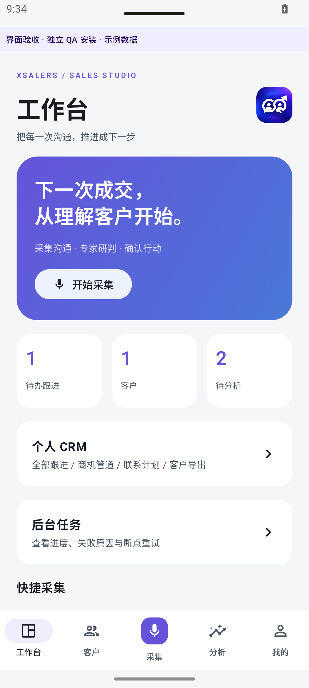

ANDROID · 0.6.0 · 2026-10-13
沟通在后台整理，客户在手上推进。
针对大录音导入失败、分析阻塞前台及个人 CRM 使用需求的升级方案与实现说明。
问题与改造
原版本同时限制音频时长 10 分钟和解码 PCM 20 MB；高采样率双声道 PCM 膨胀后容易超限。导入和模型调用共用 ViewModel busy 状态，多个操作被禁用。网络 IOException 又统一显示“连接失败”，无法判断实际故障。
现改为流式转换 16 kHz 单声道 PCM16，按 90 秒读取小音频段，通过小米兼容的 chat/completions ASR 协议转写。无需把整段录音 Base64 编码后一起上传，旧版高采样率 WAV 也在分段读取时转换。单次导入支持最长 4 小时，仍需足够手机存储空间。
长文字和长转写按完整原文分段提取证据，再汇整给专家与团队，不再静默丢弃 12000 字之后的内容。详情页对超长原文显示预览，完整内容随报告导出。
后台任务的使用方式
- 导入音频、图片或文本后立即进入任务队列，用户可以继续查看和编辑客户。
- 记录中确认分析后进入后台任务；首页与“我的”均可打开任务中心。
- 前台服务显示系统通知，任务与模型参数加密持久保存，已经转写的音频段和专家意见分阶段保存。
- 失败后查看具体原因并从已完成进度重试；不会无限自动重试模型请求。任务使用提交时的模型配置，修改配置后应取消旧任务并重新分析。
- 系统终止后可恢复队列；用户强制停止应用会停止服务，再打开任务中心继续。部分手机仍需允许后台运行。麦克风采集本身维持前台录音规则。
本次加入并发合并：前台编辑客户或标题时，不会把后台新转写、新报告及其他新导入记录覆盖。处理中删除的沟通记录不会被任务重新创建。迁移导入期间需先完成或取消后台任务。
个人 CRM 信息架构
客户资料
姓名、电话、公司、职务、邮箱、微信、来源、标签、优先级、阶段、备注及下次联系日期。支持姓名、联系方式、公司、标签等搜索以及阶段筛选，客户详情可调用系统拨号器。
跟进与商机
客户时间线保留历史沟通；商机记录金额、阶段及预计成交日期；跟进记录关联客户和沟通、截止日期与完成状态。全局个人 CRM 汇总全部客户的跟进、逾期、今日待办、联系计划、未结及成交金额。
金额仅为填写数据的合计，AI 不会自动修改成交状态、发送客户消息或写入行动。联系计划与逾期提示在应用内展示，目前不包含日历、定时推送、企业多人权限及 CRM 双向云同步。
客户信息导出
客户列表可导出当前搜索和阶段筛选范围；个人 CRM 可导出全部客户；客户详情可导出单个客户。使用系统文件保存界面，UTF-8 BOM / RFC4180 CSV 可由 Excel 打开。
导出包含资料字段、沟通次数、待办数量、未结商机金额及成交金额；不包含模型密钥或登录令牌。CSV 对引号、逗号和换行正确转义，并防止表格公式注入。导出为明文客户资料，应保存到用户选择的合适位置。录音附件与分析全文沿用原记录导出及加密迁移功能。
销售专家预设能力
- 客户需求分析师：SPIN 访谈，区分需求、影响、收益与待确认项。
- 客情与决策链顾问：BANT 核验与决策地图，区分联系人、使用者和审批人。
- 谈判与异议教练：异议澄清、价值证据、条件交换、开场收尾话术。
- 商机与跟进规划师：SMART 行动清单、推进门槛与停滞原因。
- 销售风险审阅员：付款、交付、合同承诺、竞争与流失信号核查。
- 客情分析负责人：事实—判断—行动复盘、会前议程、团队分歧与结论。
这些方法作为技能保存并绑定到预设专家，可在技能库查看。保留用户自己编写的专家提示词及已有非空技能配置；AI 专家设计师和专家团队继续使用。
网络与试用边界
客户端现在分别显示域名解析、连接失败、证书校验、超时、凭据、限流、接口地址及服务端错误；失败记录与已完成进度保留。增加合理连接、上传和响应等待时间，但不会关闭证书校验。
2026-10-13 本机复查原试用地址 HTTPS 仍连接超时，MiMo 域名探测也遇到本机解析超时，尚未完成真实服务端到端验证。客户端更新不能修复外部防火墙、DNS 或证书部署。
长录音分段转写与长文本完整分析目前使用用户自有模型配置。现有试用网关仍为单请求协议，最多 20 MB 音频或 12000 字文本。超过时应用明确提示并保留导入资料，不会把多段录音悄悄计成多次试用。试用长任务协议和公网部署、支付及 CRM 双向同步仍需服务端配合。
ASR 请求格式依据 小米官方语音识别文档：WAV/MP3、单音频输入、chat/completions 接口。
Android 模拟器界面验收
以下为实际运行截图，QA 包使用明确标记的示例资料。

suite-0.6-xsalers-home.png · 隔离 QA 示例资料验证与交付
构建通过；两款各 92 项单元测试，零失败。Lint 零错误，Xfriend 11 条、Xsalers 13 条警告。APK 包名、签名与测试入口排除已检查。详见
验证明细。
新增回归覆盖大于20 MB WAV、高采样率与声道转换、完整文本分段、任务检查点、旧资料兼容、CSV 格式与公式处理、并发资料合并及预设技能引用。Android 35 隔离 QA 包实际完成 25 MiB 长 WAV 及 34.56 MB 高采样率双声道 WAV 的后台导入；输出均为 16 kHz 单声道，长 WAV 大于 20 MiB 且可以读取为 10 个转写段。验收经过文件转换与前台服务，使用合成录音，没有调用真实模型。物理手机、真实模型、系统杀进程恢复及各类第三方文件提供者尚未完成端到端验收。
源码 D:/xfriend-suite。安装同包名、同签名 0.6.0 APK 可覆盖旧版；不要卸载或清除应用数据。旧版资料读取兼容，新字段默认空值。交付为开发签名 APK，正式商店发布另需发行签名。
电脑版协作协议 · 验证结果